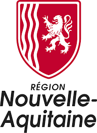

Projet FAR-Itasy
Coopération Décentralisée Région Nouvelle Aquitaine Région Itasy
Projet FAR-Itasy
Coopération Décentralisée Région Nouvelle Aquitaine Région Itasy
La Validation des Acquis de l’Expérience
La VAE s’adresse aux personnes qui ont de l’expérience professionnelle mais pas de diplôme en rapport avec celle-ci. La VAE permet d’obtenir, sur décision d’un jury, un diplôme, un titre ou un certificat de qualification sans avoir suivi une formation.
La VAE permet d’obtenir une partie ou toute une certification sur la base d’une expérience professionnelle. Cependant, il ne s’agit pas d’une simple certification attribuée sur la base d’une expérience . Il s’agit d’un véritable parcours qui nécessite le passage devant un jury pour valider les connaissances et les compétences que la personne a acquis.
La différence entre la diplomation de formation académique et la diplomation par la VAE
Au cours de la formation académique, les étudiants reçoivent une formation leur permettant d’avoir des connaissances et des compétences pour qu’ils puissent apporter des innovations et êtres performants dans le monde professionnel. La formation académique incite les étudiants à faire des recherches. En passant par la Validation des Acquis de l’Expérience, ce sont les compétences et les acquis du candidat qui sont convertis en diplôme ou en certificat.
La formation en alternance
La formation en alternance désigne un système de formation associant une expérience de travail au sein d’une entreprise et des études au sein d’un établissement d’enseignement. Ainsi, l’alternant, terme utilisé pour désigner celui qui pratique la formation par alternance, partage son temps entre les études (qui peuvent se dérouler dans un lycée professionnel, dans un centre de formation agrée, dans une école, dans une faculté) et l’entreprise où il exerce en tant que salarié ou stagiaire.